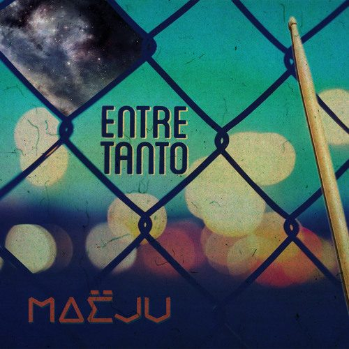
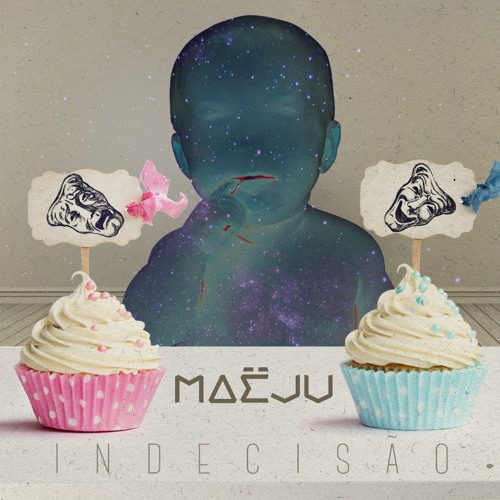
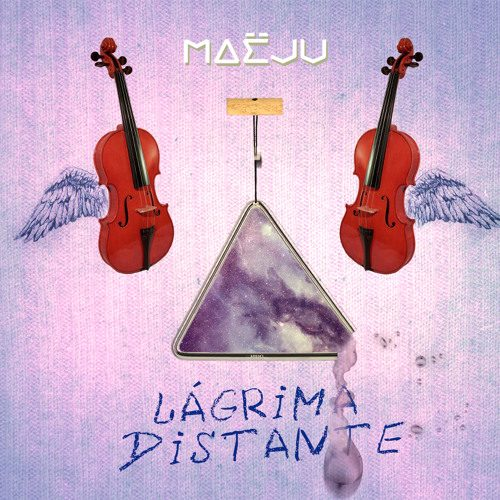
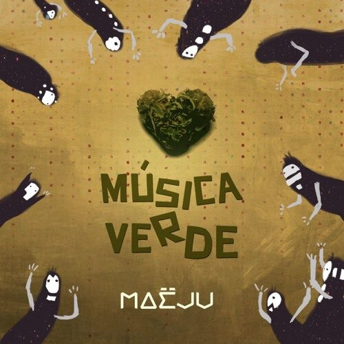
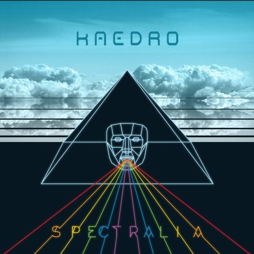
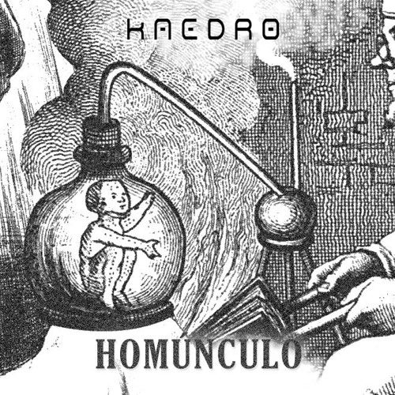
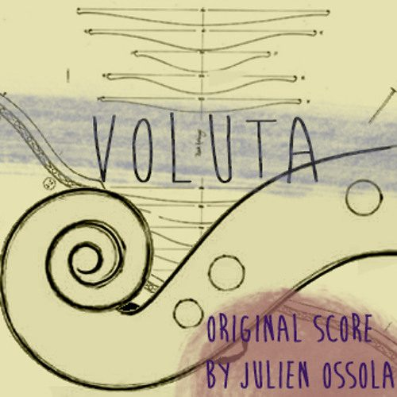
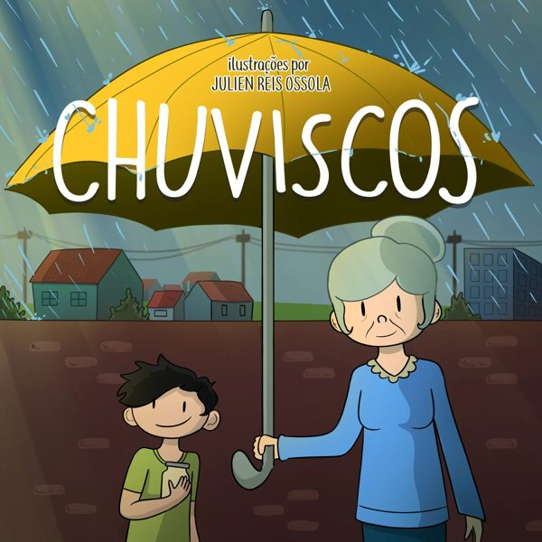

2014 a 2016
Maëju
Duo com Marconi Sampaio. Sete faixas e quatro videoclipes, com mais de 7 mil visualizações no YouTube.
Seis músicas inéditas de Julien Reis Ossola. Na gravação final, a voz será de Filipe Barbosa. O que você ouve aqui são as guias vocais: gravações caseiras, feitas para mostrar melodia, letra e estrutura antes da produção.
Compositor e produtor de Campos dos Goytacazes. Fez o Maëju, com Marconi Sampaio, e o Kaedro. Neste EP, também faz a capa e os vídeos de letra.
Cantou todas as faixas do Spectralia, EP do Kaedro lançado em 2018. Volta a gravar com Julien neste disco.
Cuida de contratos, estúdio, masterização, distribuição e do lançamento online. Também desenvolveu esta página.




Duo com Marconi Sampaio. Sete faixas e quatro videoclipes, com mais de 7 mil visualizações no YouTube.

Synthpop indie em sete faixas. Escrito, arranjado, gravado e mixado por Julien, com Filipe Barbosa na voz.

Quatro faixas eletrônicas, entre drum & bass, dubstep e darkwave.

Trilha instrumental de O Lamento do Violino. A música tema, The Bedroom, é a mais ouvida.

Julien Reis Ossola também ilustra. Em 2021, o livro infantil Chuviscos, com ilustrações dele, foi contemplado pela Lei Aldir Blanc em Campos. A capa do Conteúdo Duvidoso também vai ser dele.
No lançamento, as seis músicas ganham vídeo de letra com legenda, três são traduzidas para Libras e as letras ficam em texto, como aqui, para quem usa leitor de tela.